10 部片单 · 恐怖 / 科幻 / 惊悚 / 悬疑 / 剧情
| # | 片名 | 类型 | 评分 / 状态 |
|---|---|---|---|
| 01 | 人类之子 | 科幻 / 惊悚 / 反乌托邦 | 7.6 / 92% / 84 |
| 02 | 罗生门 | 悬疑 / 剧情 / 犯罪 | 8.8 / 98% / 8.1 |
| 03 | 罗斯玛丽的婴儿 | 恐怖 / 心理惊悚 | 8.2 / 97% / 96 |
| 04 | 驱魔人 | 恐怖 / 宗教 / 惊悚 | 7.7 / 78% / 83 |
| 05 | 控方证人 | 悬疑 / 法庭 / 剧情 | 9.6 / 100% / 8.4 |
| 06 | 死亡幻觉 | 科幻 / 悬疑 / 心理惊悚 | 7.4 / 85% / 8.0 |
| 07 | 心慌方 | 科幻 / 悬疑 / 惊悚 | 7.9 / 7.2 / 63% |
| 08 | 饥饿站台 | 科幻 / 惊悚 / 社会寓言 | 7.9 / 80% / 7.0 |
| 09 | 活埋 | 惊悚 / 悬疑 / 剧情 | 7.9 / 87% / 65 |
| 10 | 吾栖之肤 | 惊悚 / 悬疑 / 剧情 | 7.6 / 82% / 7.6 |
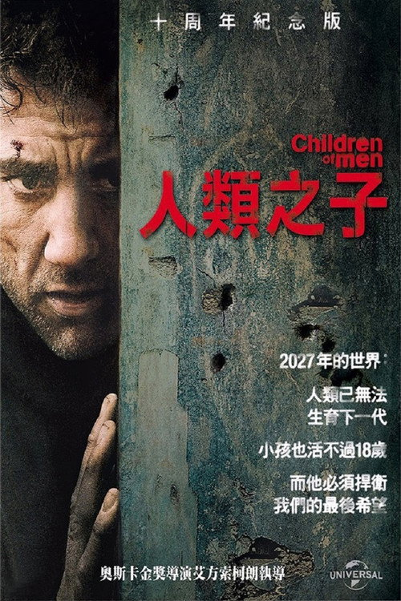
人类之子 Children of Men
全世界已经十八年没有新生儿了。而他负责护送唯一的那个孕妇。
剧情梗概
2027 年。人类不知何故失去了生育能力，整整十八年没有一个婴儿出生，地球上最年轻的人刚在十八岁死去，全世界都在自杀。英国成了最后的堡垒：军队上街，移民被关进铁笼，安乐死被包装成一项叫「静谧计划」的福利。曾经的激进分子西奥如今是个麻木的政府小官僚，直到前妻朱莉安找到他，要他弄一张通行证，把一个黑人女孩送出这个国家。西奥后来才知道，那个女孩怀着孩子。
亮点
- 阿方索·卡隆自编自导（与蒂莫西·J·塞克斯顿等人合写），改编自 P.D. 詹姆斯 1992 年的同名小说。
- 摄影艾曼努尔·卢贝兹基与卡隆设计了一整套长镜头：车内遇袭那场戏是一个镜头拍完的，摄影机被改装成能让演员上下车、摄影师坐在车顶的特殊结构。
- 全片没有一个「未来科技奇观」——没有悬浮车、没有激光枪。卡隆刻意把未来拍成「现在的伦敦再脏一点」，道具里出现的多是日常垃圾与政府告示。
- 克里夫·欧文饰西奥，一个不想当英雄、只是被拖着走的人；朱丽安·摩尔饰朱莉安，戏份不多却决定全片走向。
- 迈克尔·凯恩饰隐居在森林里的老嬉皮贾斯珀，造型与台词都参考了真实的英国反文化老人，是全片唯一还有幽默感的部分。
- 获第 79 届奥斯卡最佳改编剧本、最佳摄影、最佳剪辑三项提名；威尼斯电影节授予最佳技术贡献奖（摄影）。烂番茄 92%、Metacritic 84、IMDb 7.9。
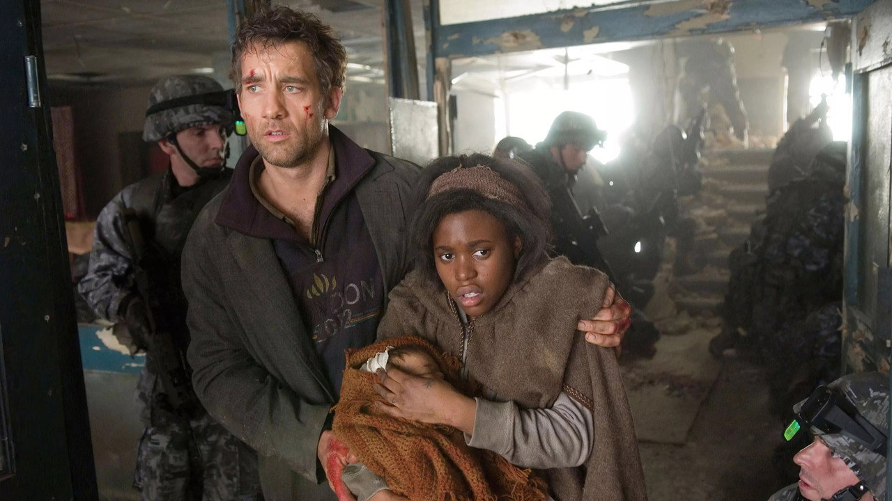
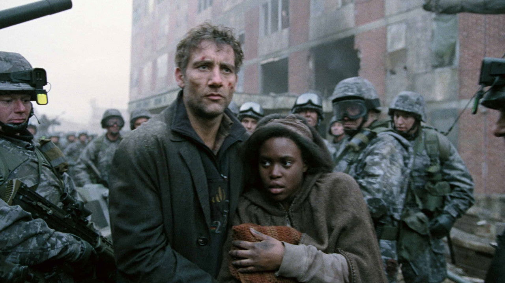
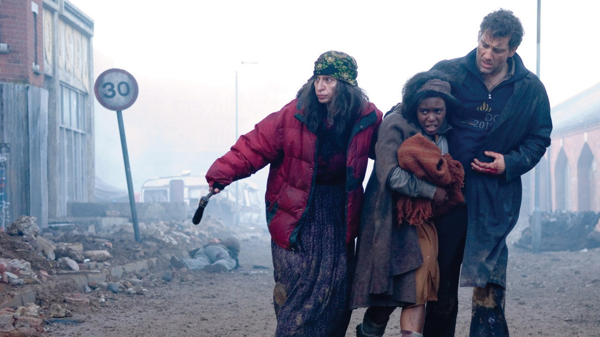
导演与主创 · 他们的历史作品

 哈利·波特与阿兹卡班的囚徒
哈利·波特与阿兹卡班的囚徒 地心引力
地心引力 罗马
罗马 你妈妈也一样
你妈妈也一样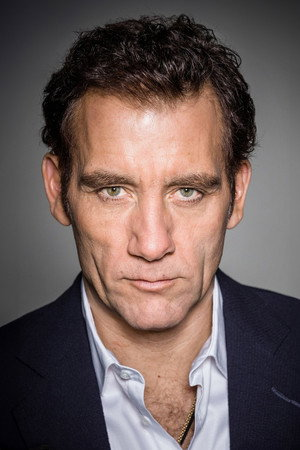
 局内人
局内人 罪恶之城
罪恶之城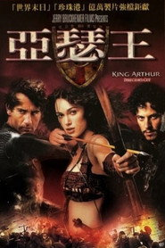
亚瑟王 星际特工：千星之城
星际特工：千星之城
 侏罗纪公园2：失落的世界
侏罗纪公园2：失落的世界 谋杀绿脚趾
谋杀绿脚趾 王牌特工2：黄金圈
王牌特工2：黄金圈 依然爱丽丝
依然爱丽丝短评（轻微剧透）
《人类之子》最反直觉的一点是：它把「人类要灭绝了」拍得一点也不喧闹。卡隆没给爆炸、没给英雄、甚至没给解释——为什么不能生育，影片从头到尾不回答，就像现实里没人会给你答案。它真正拍的是「一个不再有未来的社会会变成什么样」：人们不再建东西、不再照顾动物、不再吵架，只剩管理。技术上它值得单独一提：那几段长镜头不是炫技，而是把「逃不掉」这件事拍成了物理事实——镜头不切，你就没有喘息点。西奥这个角色也选得准，他不是觉醒者，他只是被推着走完这段路的人。缺点必须说清楚：豆瓣 7.6 明显低于烂番茄 92% 与 Metacritic 84，这是本期国内外落差最大的一部，国内观众普遍觉得它节奏慢、情绪冷；第三幕的战场段落与前半段的冷静气质也确实有割裂。轻微剧透：结尾那条船叫「明天」，它在雾里出现的时候，全片的配乐突然变成了人声合唱——这是它唯一一次允许自己温柔。
为什么值得一看
喜欢《银翼杀手》《降临》《编号17》那种「科幻只是容器，装的是现实议题」的观众；想看「长镜头究竟能干什么」的人。不适合想看动作科幻的人——它几乎不打架，全片是一场接一场的穿越。含战争暴力与大量粗话（R 级）。内地未引进，流媒体可看。建议看 109 分钟院线版，不要被慢节奏劝退前 30 分钟。
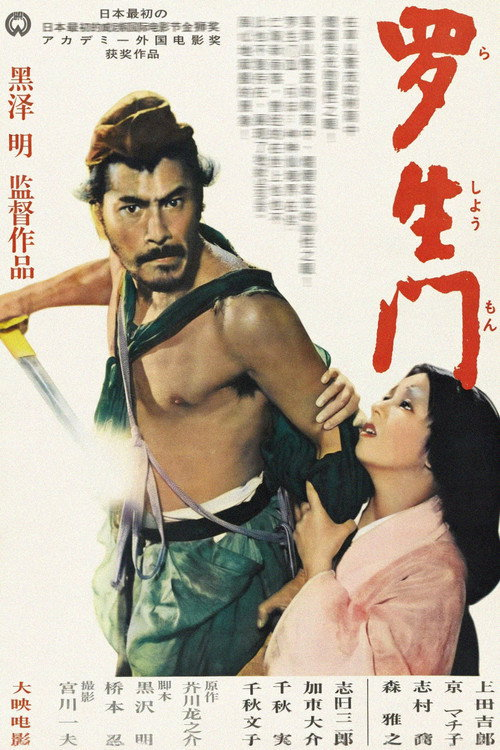
罗生门 Rashomon
四个人讲了同一个案子。四个人讲的都是自己。
剧情梗概
京都罗生门下，三个避雨的人聊起一桩案子：武士金泽武弘死在山林里，他的妻子真砂被强盗多襄丸侮辱。公堂上，强盗、妻子、借女巫之口作证的武士亡魂依次陈述。三个版本都完整、都自洽，也都恰好把自己放在最好看的位置上。砍柴人最后说出了第四个版本——而他也可能是最不诚实的那一个。
亮点
- 黑泽明执导，桥本忍编剧，取材于芥川龙之介的两个短篇：情节骨架取自《竹林中》，罗生门下的框架取自《罗生门》。
- 三船敏郎饰多襄丸，这是他与黑泽明合作的第八部片，也是他走向国际的起点——此前日本电影几乎没有被西方认真看过的机会。
- 获第 12 届威尼斯电影节金狮奖，并获奥斯卡荣誉奖（最佳外语片）。它是西方世界认识日本电影、乃至整个亚洲电影的第一块敲门砖。
- 摄影宫川一夫在树林里做了大量「穿林光斑」的布光实验，并据说直接把摄影机对准太阳拍摄——这在当时的日本摄影规范里是明确的禁忌。
- 「罗生门」一词从此进入多国语言，成为「各方各执一词、真相不可还原」的代名词，这可能是电影对语言最大的一次输出。
- 烂番茄 98%、豆瓣 8.8（超 36 万人评分），长期稳居豆瓣 TOP250。
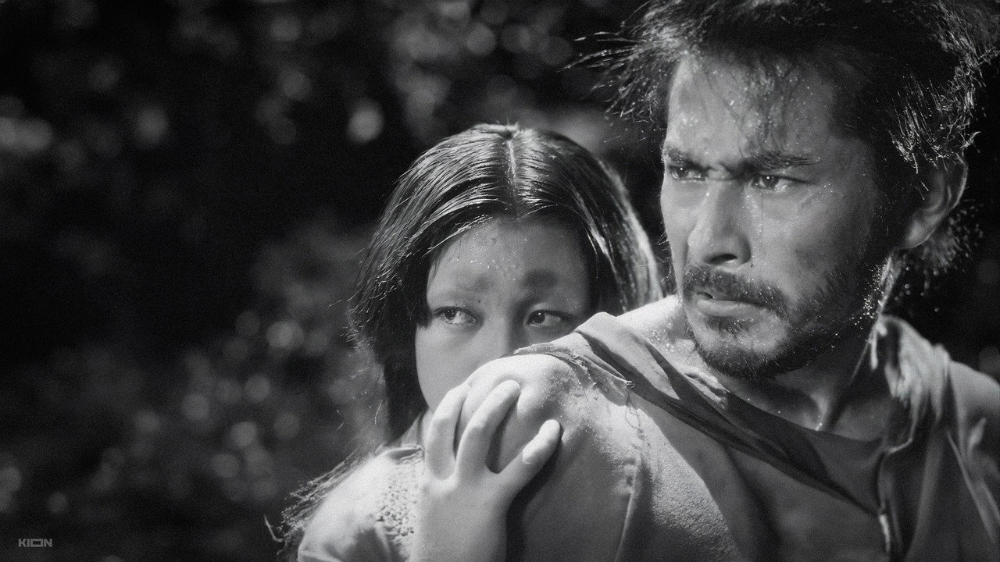
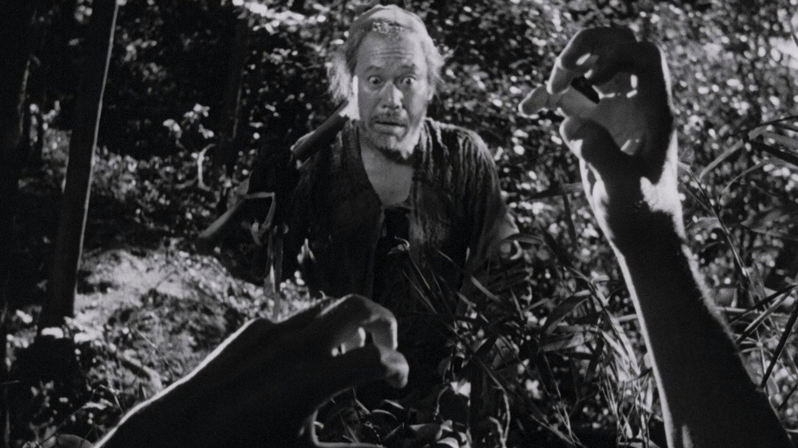
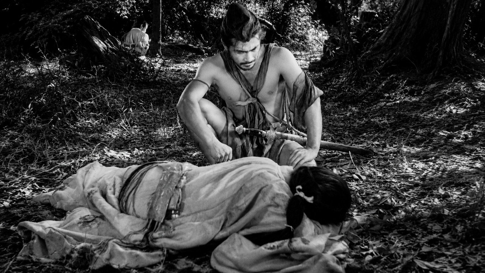
导演与主创 · 他们的历史作品
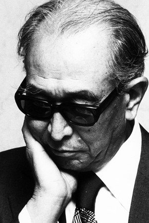
 七武士
七武士 乱
乱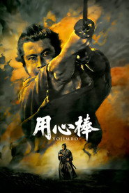
用心棒 生之欲
生之欲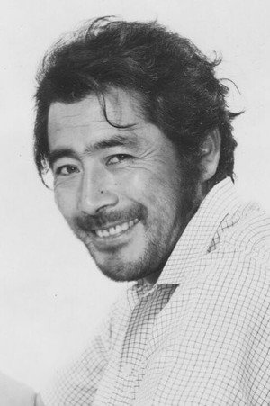
七武士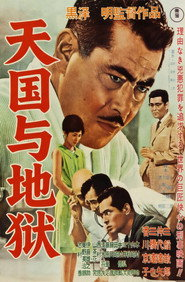
天国与地狱 蜘蛛巢城
蜘蛛巢城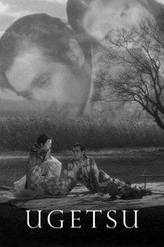
雨月物语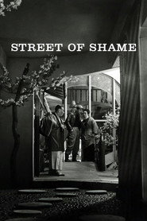
赤线地带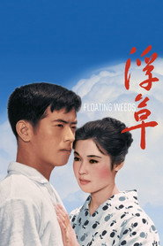
浮草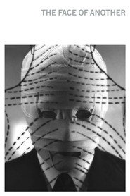
他人之颜短评（轻微剧透）
《罗生门》被引用得太多了，多到很多人以为自己看过。真正坐下来看会发现它短得惊人——88 分钟，几乎没有剧情推进，就是四个人轮流讲同一件事。而黑泽明真正厉害的地方不在「真相不可知」这个结论，在他怎么拍这个结论：三个版本不是三段闪回，是三段风格完全不同的电影。强盗那版是动作片，妻子那版是情节剧，武士那版是能乐风的幽冥戏。同一个人、同一片林子，摄影机走位、剪辑节奏、表演方式全换了。也就是说，谎言不只是内容，谎言是形式。这才是它七十六年后还能看的原因。技术上它也很硬：树林里那些流动的光斑、三船敏郎那种近乎动物性的表演、还有那场著名的雨——罗生门下的雨从头下到尾，是全片唯一的现实层。缺点也说清楚：它对现代观众有门槛，节奏极慢、表演风格戏剧化、结尾那点人道主义（弃婴）在今天的眼光下略显刻意。轻微剧透：砍柴人抱走孩子那一段是黑泽明自己加的，原著没有。他不想在「人人都说谎」之后把门关死。
为什么值得一看
想补电影史地基的人——这是那种「没看过聊不下去」的基础款，而且它比想象中好看得多。喜欢《看不见的客人》《控方证人》《利刃出鞘》这种多角度叙事的观众，会发现你的源头在这里。不适合想看快节奏悬疑的人——它不反转、不破案，它只是把同一个案子讲了四遍。黑白、88 分钟，门槛主要在耐心。内地未正式引进，流媒体与各平台可看。
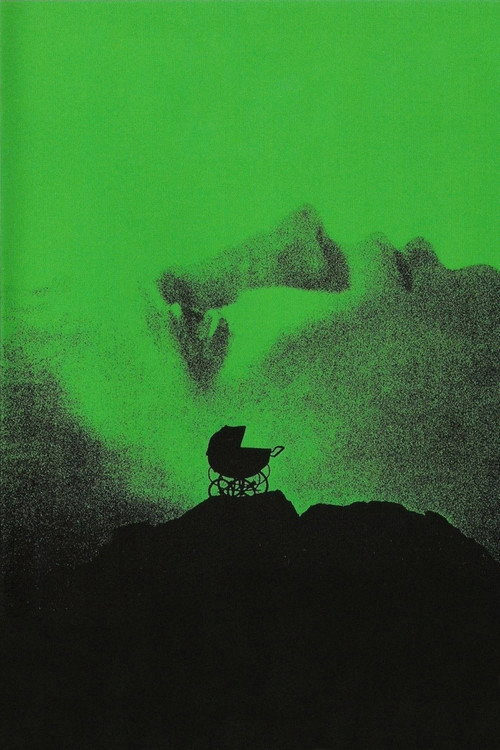
罗斯玛丽的婴儿 Rosemary's Baby
搬家、怀孕、邻居很热情。一切都好得不太对。
剧情梗概
罗斯玛丽和演员丈夫盖伊搬进纽约一栋叫「布拉姆福德」的老公寓，朋友提醒过这栋楼名声不好，他们没在意。隔壁是一对过分热情的老夫妇，刚认识就送东西、请吃饭。之后盖伊的事业突然有了起色，罗斯玛丽怀了孕——但孕期痛得不像话，人也越来越瘦。她开始怀疑邻居、怀疑医生、怀疑丈夫。所有人都温和地告诉她：是孕期焦虑。直到孩子出生，她终于看见了那双眼睛。
亮点
- 罗曼·波兰斯基自编自导，改编自艾拉·莱文 1967 年的同名畅销小说；这是他的好莱坞首作，也是他「公寓三部曲」的第一部。
- 米亚·法罗饰罗斯玛丽，凭此片成为当红女星；她为角色剪的短发由维达·沙宣设计，成为六十年代最被模仿的发型之一。
- 露丝·戈登饰邻居明妮，凭此片拿下奥斯卡最佳女配角，她在领奖时说这个奖属于每一个住在隔壁的老太太。
- 全片没有一个超自然镜头直接出现——恶魔从未露面，连婴儿也只在最后几秒露了一瞬。恐怖全部来自氛围、构图与声音。
- 配乐由波兰作曲家克里斯托夫·柯梅达创作，那首没有歌词的摇篮曲仅用人声哼唱，是影史最著名的恐怖配乐之一。
- 烂番茄 97%、Metacritic 96。需要说明：波兰斯基本人在 1977 年的真实案件，让这部片此后长期被附加了影片之外的阴影与争议，这一点无法回避。
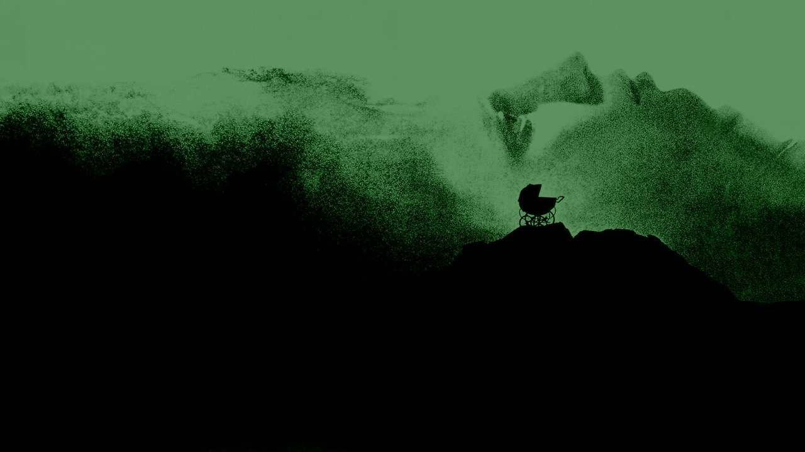
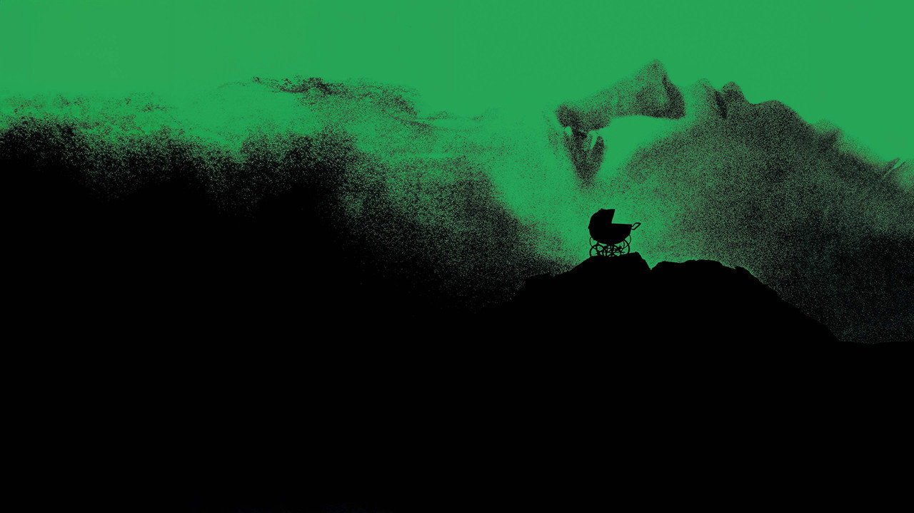
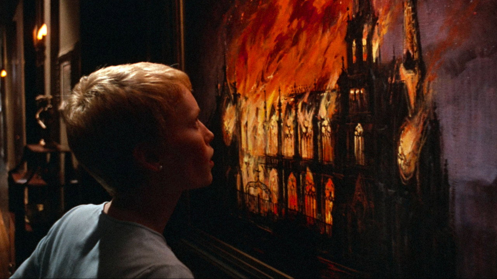
导演与主创 · 他们的历史作品
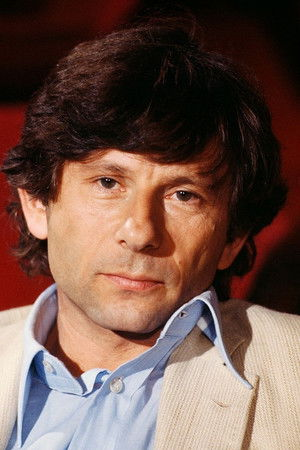
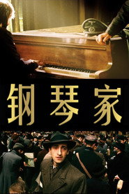
钢琴家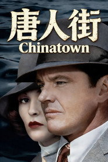
唐人街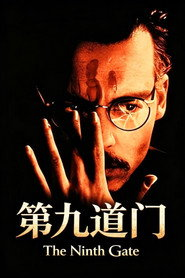
第九道门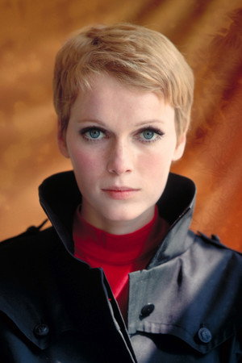
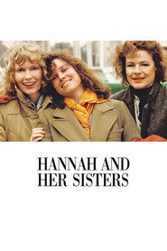
汉娜姐妹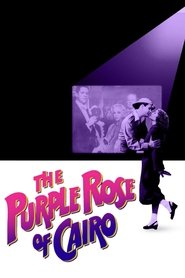
开罗紫玫瑰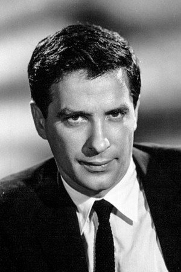
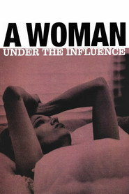
醉酒的女人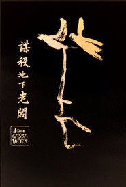
谋杀地下老板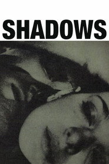
影子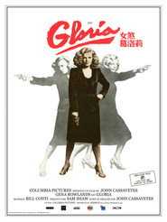
女煞葛洛莉短评（轻微剧透）
《罗斯玛丽的婴儿》真正可怕的地方不是撒旦，是所有人都很客气。波兰斯基没给她任何可以反抗的对手：丈夫说「别胡思乱想」，医生说「为了孩子」，邻居端来一杯加了料的奶昔——没有一个动作是暴力的，但每一个都在把她往同一个方向推。这就是它比大多数宗教恐怖片高级的原因：它拍的是「一个女人说出了真相，但没人相信她」这件事本身有多恐怖，而这件事在现实里每时每刻都在发生。技术上它克制得惊人，摄影机常常就架在她身后不动，让她在画面里显得很小、很孤立；米亚·法罗那种几乎病态的瘦和空洞的眼神是实打实的表演，不是化妆。缺点必须说：136 分钟在今天偏长，中段确实拖；结尾的处理有点仓促，最后那场戏的台词略显说教。Metacritic 96 与豆瓣 8.2 之间的落差，也说明它在中文语境里并没有被普遍奉为神作。轻微剧透：她最后没有逃走，也没有杀死孩子——她在摇篮前停下来的那个表情，才是这部片真正的结局。
为什么值得一看
喜欢《遗传厄运》《仲夏夜惊魂》《无瑕修女》那种「邪教在日常里」的观众；对「女性焦虑被当成精神病」这个母题有兴趣的人。它几乎不靠 jump scare，也没有什么血腥镜头，心理压迫远大于视觉刺激（R 级，主要是氛围与性暗示）。不适合想看驱魔、附身、血浆那类恐怖片的人——它全片都是日常戏。内地未引进，流媒体可看。
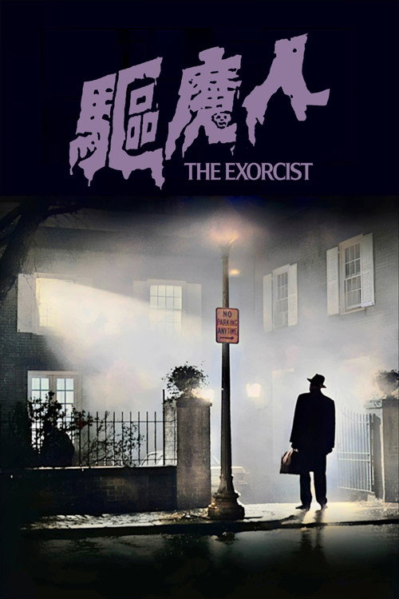
驱魔人 The Exorcist
医生查不出问题。于是他们找了神父。
剧情梗概
华盛顿，女演员克里斯带着十二岁的女儿芮根住在乔治城。芮根开始出现异常：抽搐、说脏话、力气大得不像个孩子，声音也变了。医生查不出器质性问题，精神科也束手无策，各种检查做了一遍又一遍。走投无路的母亲找到耶稣会的卡拉斯神父——一个自己正在失去信仰、也正在照顾病重母亲的年轻人。经过漫长审批，教会派来有经验的老驱魔人默林神父。两个人在那间卧室里待了很久。
亮点
- 威廉·弗莱德金执导，威廉·彼得·布拉蒂改编自自己 1971 年的同名小说，灵感来自 1949 年马里兰州一起真实的少年驱魔记录。
- 获第 46 届奥斯卡最佳改编剧本与最佳音响，并提名最佳影片——它是影史上第一部提名奥斯卡最佳影片的恐怖片。
- 琳达·布莱尔饰芮根，拍摄时十四岁；那场著名的「头颅 180 度」靠机械假体完成，音效是后期加上的骨骼摩擦声。
- 影片用纪录片式的冷静手法拍驱魔：医生检查、脑电图、血管造影全部先走一遍，把「科学真的解释不了」做实之后，恶魔才登场。
- 1973 年上映时引发全球性恐慌：影院配发呕吐袋，有观众当场晕倒，波士顿与密西西比的部分城市曾试图禁映。
- 为了拍出可见的白气，片场被实际降温到接近零度；梅林神父到场那场戏的门口构图，直接引用了乔治·德·拉图尔的油画。
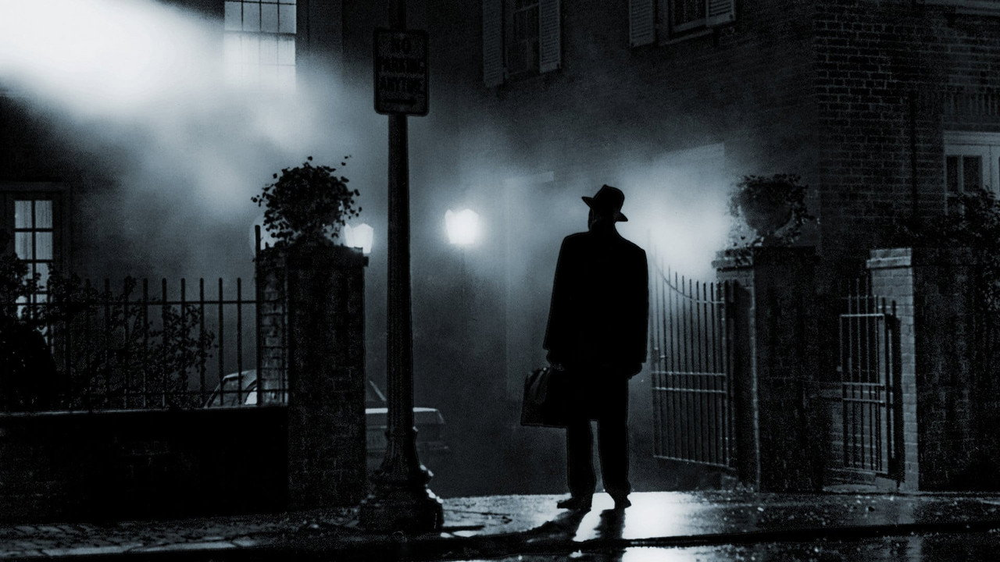
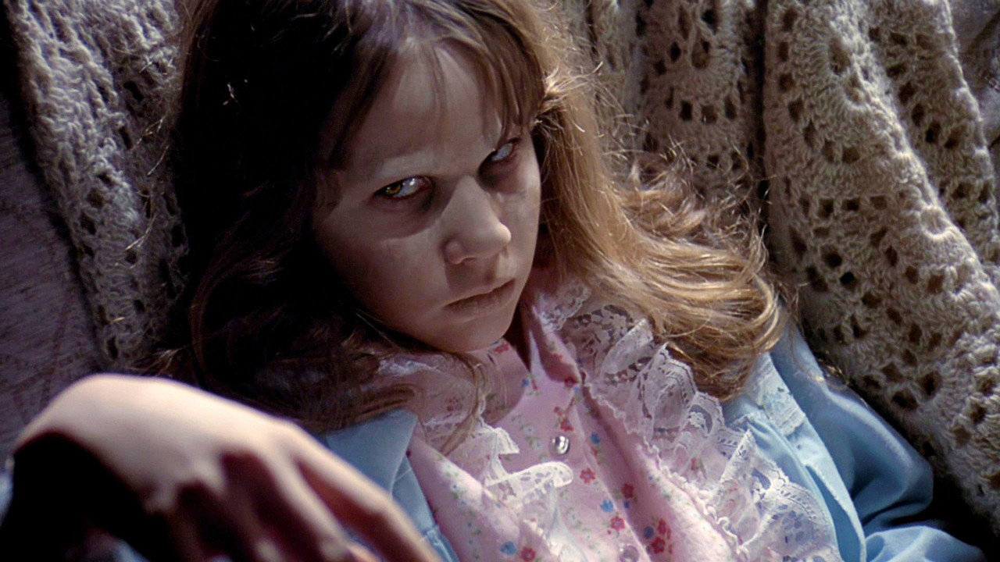
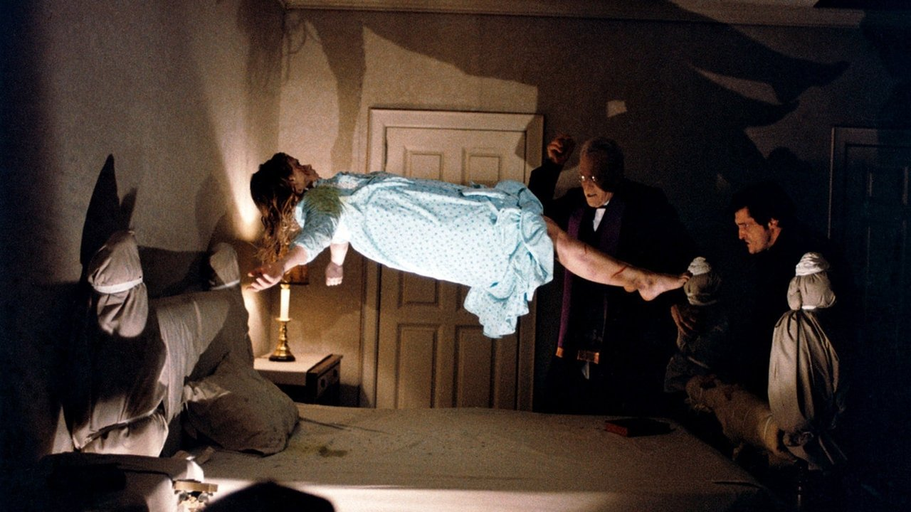
导演与主创 · 他们的历史作品
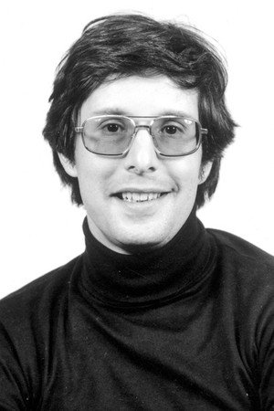
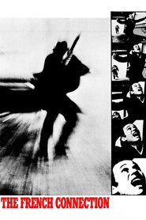
法国贩毒网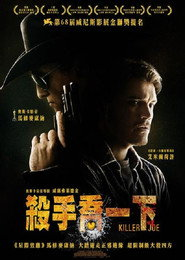
杀手乔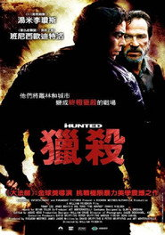
猎捕游戏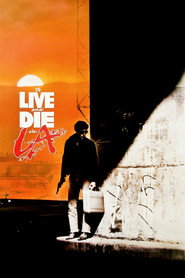
威猛奇兵
 梦之安魂曲
梦之安魂曲 星际穿越
星际穿越 时光尽头的恋人
时光尽头的恋人 珍爱泉源
珍爱泉源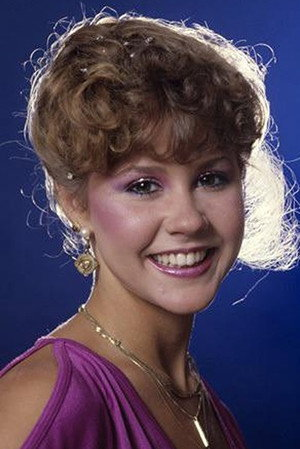
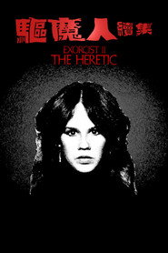
驱魔人II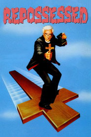
又见鬼缠身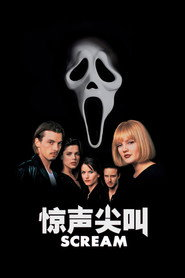
惊声尖叫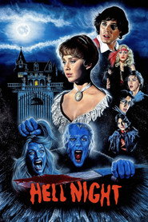
地狱之夜短评（轻微剧透）
《驱魔人》今天最容易被低估的一点是：它前五十分钟几乎是一部医疗剧情片。弗莱德金花了极长时间拍检查、拍会诊、拍母亲的疲惫，把「我们已经用尽了一切现代手段」这件事拍得极其扎实。正因为这样，后面那场驱魔才有重量——它不是跳大神，是两个人在所有办法都失败后，唯一还能做的事。影片真正讲的也不是恶魔，是信仰的转移：一个失去信心的年轻神父，和一个比谁都清楚代价的老神父。技术上它五十多年后依然有效，那些现在看起来「土」的特效反而更难受，因为你能感觉到那是真实物体在动。缺点必须说清楚：烂番茄只有 78%，是本期口碑最低的一部，很多影评人认为它中段的驱魔戏过于冗长、台词重复；豆瓣 7.7 与 IMDb 8.1 的落差也说明它在中文语境里并不被普遍认可为「神作」。另外它靠宗教符号与亵渎台词制造的冲击，不信这套的观众会觉得隔了一层。轻微剧透：卡拉斯最后做的那个选择，是他唯一能同时救那个孩子和自己信仰的方式——而影片把它拍成了一个几乎没有任何表情的动作。
为什么值得一看
想补现代恐怖片源头的人——此后五十年的附身、驱魔题材几乎都在它的语法里。喜欢《遗传厄运》《凶兆前传》《破墓》那种「家庭被某种更老的东西入侵」的观众。不适合想追求爽感的人：它节奏慢、大量对话、真正吓人的镜头只有几个（R 级，含亵渎语言与身体恐怖）。建议看 122 分钟原版，导演剪辑版（RT 88%）多了十分钟的「蜘蛛走楼梯」等段落，可二刷补。内地未引进。
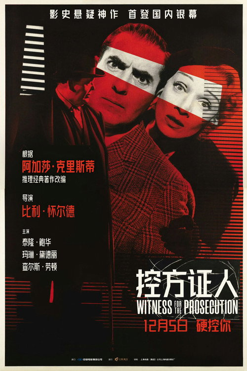
控方证人 Witness for the Prosecution
她出庭作证，指认自己的丈夫。然后法庭开始崩塌。
剧情梗概
伦敦名律师威尔弗里德爵士刚从心脏病里捡回一条命，被护士盯得死死的，烟酒全被没收。这时来了个案子：富婆被杀，八万英镑遗产留给了英俊的沃尔，而他那位冷淡的德国妻子克里斯汀将成为控方证人。威尔弗里德一眼看出这案子不对劲，还是接了下来。庭上，证词一个接一个翻转，直到最后十分钟。
亮点
- 比利·怀尔德自编自导，改编自阿加莎·克里斯蒂的同名短篇（原为舞台剧），并与哈里·库尼兹共同改写剧本。
- 查尔斯·劳顿饰威尔弗里德，凭此片获奥斯卡最佳男主角提名；他与护士斗嘴的整条线都是怀尔德为了调节气氛加的，原著没有这个角色。
- 玛琳·黛德丽饰克里斯汀，出场时她已经五十六岁；那套法庭上的黑白造型被称为「中性美的巅峰」，她的最后一次转身决定全片走向。
- 泰隆·鲍华饰沃尔——这是他最后一部完成的电影，拍完次年他在拍《所罗门与示巴》时突发心脏病去世，年仅四十四岁。
- 爱尔莎·兰切斯特饰护士，凭此片拿下金球奖最佳女配角；现实中她是劳顿的妻子，两人斗嘴的戏几乎是本色出演。
- 烂番茄 100% 满分；豆瓣 9.6、超 150 万人评分，长期位列豆瓣 TOP250 前 20；IMDb 8.4。
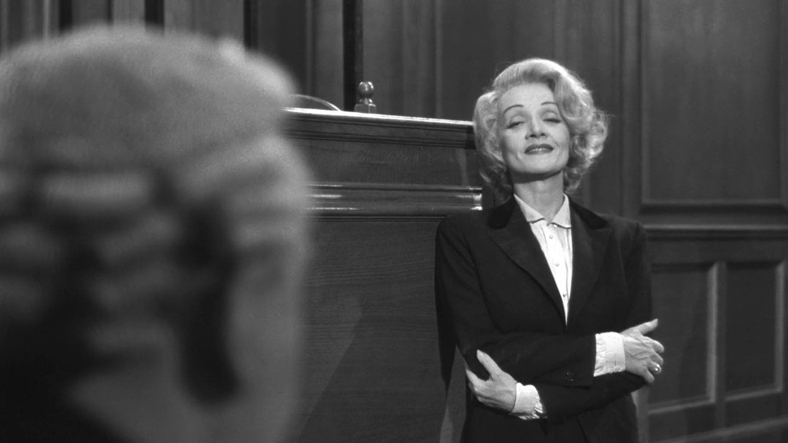
导演与主创 · 他们的历史作品

 斯巴达克斯
斯巴达克斯 叛舰喋血记
叛舰喋血记 亡魂岛
亡魂岛短评（轻微剧透）
《控方证人》现在被谈得最多的还是那个结局，但它真正厉害的地方其实是「它是怎么让你觉得你猜到了的」。怀尔德从头到尾都在给线索，但他给的每一条都正好落在你会误读的方向上——这不是骗，是把你的推理习惯当成了工具。影片从头到尾几乎只有两个场景：律所和法庭。没有外景、没有追车、没有调查蒙太奇，全靠台词和表演撑满 116 分钟，而它一点都不闷，因为每一场对话都在推进一个你还没意识到的布局。查尔斯·劳顿的表演是教科书级的：他把一个自负、刻薄、贪杯的老律师演得让你在最后十分钟突然心疼他。技术上它没有炫的东西，但剪辑节奏极准，法庭戏的镜头关系始终清楚。缺点必须说：这是 1957 年的黑白片，节奏与表演风格与今天差别很大，前半小时的案情铺垫对习惯快节奏的观众是个门槛；另外它的结局太有名了，第一次看的人多少都听说过一点。轻微剧透：影片最后威尔弗里德说的那句「她处决了他」，是全片唯一一次他没有在开玩笑。
为什么值得一看
还没看过的人：这是「反转片」的原点之一，而且 68 年过去它依然是最干净的那一版。喜欢《利刃出鞘》《看不见的客人》《非常嫌疑犯》的观众，会发现你熟悉的那些手法在这里已经有了。它几乎不适合「想被吓到」的人——它不吓人，它让你在最后一刻说不出话。语言密度高但不晦涩，建议看上译厂配音版或带字幕的原版都行。2025 年 12 月刚在内地公映过，是本期唯一在内地大银幕上映的片子，如果还有排片，值得去影院看一次。
死亡幻觉 Donnie Darko
一只兔子告诉他，世界还有 28 天 6 小时 48 分 12 秒。
剧情梗概
1988 年，弗吉尼亚州郊区的中产社区。少年唐尼有心理问题，夜里梦游——正好躲过了一台从天上砸下来、贯穿他卧室的飞机引擎。此后他开始看见一个穿兔子戏服的人「弗兰克」，对方告诉他世界将在 28 天后终结。他读到一本《时空旅行哲学》，认识了新的女孩，也被学校里的励志讲师和保守家长团体轮番教育。倒计时在走。
亮点
- 理查德·凯利自编自导，这是他二十四岁时的长片处女作，此后他再没能拍出同等影响力的作品。
- 杰克·吉伦哈尔饰唐尼，玛吉·吉伦哈尔饰他的姐姐——现实中两人是亲姐弟，这个选角在当时被当成噱头，现在看是神来之笔。
- 帕特里克·斯威兹饰那个一直笑着的励志讲师，是一个刻意做作的反派；德鲁·巴里摩尔同时担任制片并出演，凯瑟琳·罗斯、诺亚·怀尔也在片中。
- 2001 年 10 月北美公映时只有 58 家影院，票房惨败；靠 DVD 口碑翻盘，成为影史最著名的「邪典复兴」案例之一。
- 兔子弗兰克的戏服由剧组手工制作，凯利说设计时参考了《兔八哥》和查克·E·起司的机械玩偶——就是要那种廉价、友好、但哪里不对的感觉。
- 片中那本《时空旅行哲学》是虚构的，但导演剪辑版里把它写成了完整的、可以读的文本，这也是为什么很多人推荐二刷看剪辑版。
导演与主创 · 他们的历史作品

 夜行者
夜行者 十二宫
十二宫 源代码
源代码 蜘蛛侠：英雄远征
蜘蛛侠：英雄远征 蝙蝠侠：黑暗骑士
蝙蝠侠：黑暗骑士 惊天危机
惊天危机短评（轻微剧透）
《死亡幻觉》是那种「看完第一遍你会觉得懂了，然后上网一查发现自己完全没懂」的电影。它最聪明的地方在于它把「离线宇宙」「活体接收者」这些设定塞进一本书里，然后让观众自己去判断唐尼到底是疯了还是真的——影片从头到尾都不替你选。而它真正扎实的那一层，是它对 1988 年美国郊区中产的描写：电视里的总统辩论、学校的保守家长、那个用励志演讲掩盖冷酷的讲师，这些才是唐尼真正想让世界消失的原因。技术上它的预算很低，特效极少，全靠构图、剪辑和那首《Mad World》的翻唱撑住情绪——盖瑞·朱尔的版本几乎成了这部片的第二个片名。缺点必须说：豆瓣只有 7.4，明显低于烂番茄 85% 与 IMDb 8.0，中文语境里它被长期当成「装逼片」；Metacritic 71 也不算高，影评人认为它的象征系统过于拥挤、结尾的收束偏机械。另外导演剪辑版和院线版差别极大，看哪一版会直接决定你对它的评价。轻微剧透：唐尼最后笑了一下——那个笑是全片唯一没有解释、也不需要解释的东西。
为什么值得一看
喜欢《彗星来的那一夜》《穆赫兰道》《2001太空漫游》那种「需要自己拼、而且没有标准答案」的观众；对 80 年代美国郊区文化有兴趣的人。它不吓人、也不算烧脑到无法理解，但你会有一半时间不确定自己看的是什么。不适合想要清晰结局的人——它是那种越解释越糟的片。建议第一遍看 113 分钟院线版，喜欢再看 133 分钟导演剪辑版。内地未引进，流媒体可看。
心慌方 Cube
六个人醒来，在一个由立方体组成的迷宫里。有些房间会杀你。
剧情梗概
六个陌生人醒来，发现自己在一个由形状完全相同的立方体房间组成的巨大结构里，上下左右每一面都有通往隔壁的门。他们一个是警察，一个是越狱专家，一个是医生，一个是建筑师，一个是数学系学生，还有一个自闭症学者。很快他们发现有些房间有机关。数学学生开始算每扇门上刻着的三组数字，试图找出哪些是质数——也就是有陷阱的房间。然后她算出了坐标。
亮点
- 文森佐·纳塔利的长片处女作，他此前是《捍卫机密》的分镜师；本片预算约 35 万加元，是加拿大独立科幻的里程碑。
- 全片只有一个真实搭建的立方体房间（边长 14 英尺），靠更换面板颜色、灯光与道具拍出所有「不同」的房间。
- 立方体的数字谜题是真的：房间编号的数字根决定坐标，质数编号的房间有陷阱——纳塔利请了数学家参与设计，公式在片中可以被验证。
- 六个角色没有姓名，只有职业和编号，最后活下来的人也并不是因为更聪明或更善良。
- 在加拿大本土票房惨败，被法国发行商看中并砸钱宣传，在法国成为当年暑期第二卖座片，全球票房约 900 万美元。
- 2024 年推出 4K 修复版，入选加拿大「Canadian Cinema Reignited」经典修复计划的 23 部片之一。
导演与主创 · 他们的历史作品
 人工进化
人工进化 水形物语
水形物语 猩球崛起人工进化
猩球崛起人工进化短评（轻微剧透）
《心慌方》最有意思的地方是：它把「谁建造了这个东西」这个问题彻底丢掉了。影片不解释、不追溯、最后也不给答案，从头到尾只有六个人在算怎么出去。这反而让它变成了一部纯粹的社会实验片：六个角色分别代表国家机器、技术、经验、良知、科学与无辜，危机一来，这套小社会三十分钟就散了。它同时也是一部真正的解谜片——那些数字是真的能算的，你可以跟着一起推，这是今天大部分「烧脑片」不肯做的事。技术上它是极限省钱的代表：一个布景、七个人、90 分钟，靠美术和声音把它撑住了。缺点必须说清楚：烂番茄只有 63%、Metacritic 61，是本期国内外口味落差最大的一部——影评人普遍认为人物刻画薄、台词生硬、结尾敷衍；豆瓣 7.9 反而偏高，因为它在国内被当成「密室解谜神作」长期流传。另外几段表演确实粗糙，中段有几处逻辑略松。轻微剧透：最后走出立方体的那个人，不是算出答案的人，也不是最勇敢的人——这个安排是这部片最冷的地方。
为什么值得一看
喜欢《彗星来的那一夜》《这个男人来自地球》那种「一个布景、全靠想法」的低成本高概念片的人；喜欢解谜、数学梗、密室设定的观众。它含几段相当直接的暴力与血腥（R 级），而且是 1997 年的片子，画质与表演风格需要一点适应。不适合想看人物弧光或情感戏的人——它几乎完全没有。内地未引进，2024 年 4K 修复版流媒体可看。
饥饿站台 The Platform
食物从上面下来。你住第几层，决定你能吃到什么。
剧情梗概
一座垂直的监狱，每一层住两个人，中间是一个方形的洞。一桌丰盛的食物从第 0 层开始往下送，每层停留几分钟。上面的人先吃，下面的人吃剩下的。格伦自愿进来待六个月换一张证书，醒来时在第 48 层。他的第一个室友告诉他规则：每个月你会被随机换到新的一层，可能上去，也可能下到很深很深的地方。
亮点
- 加尔德·加兹特鲁·乌鲁蒂亚的长片处女作；他是西班牙巴斯克地区导演，此前主要拍短片和广告。
- 伊万·马萨盖饰格伦，佐里昂·埃吉莱奥尔饰他的第一个室友崔马加西——后者那段关于「堂吉诃德」的独白是全片被引用最多的一段。
- 全片几乎只有一个布景（竖井与两层平台），靠灯光、血浆、声音与极少的数字特效制造压迫，成本极低。
- 2019 年多伦多国际电影节「午夜疯狂」单元观众选择奖；获第 34 届西班牙戈雅奖最佳特效。
- Netflix 买下全球发行权，2020 年 3 月上线——正值全球疫情初期，它在流媒体上的爆红与这个时间点很难分开。
- 2024 年推出续集《饥饿站台 2》，换导演继续讲竖井规则如何演变，口碑明显下滑。
导演与主创 · 他们的历史作品
 潘神的迷宫
潘神的迷宫短评（轻微剧透）
《饥饿站台》的设定直白到近乎粗暴：一桌菜从上面下来，你住第几层就吃第几口。它没有隐喻的耐心，把阶层这件事直接画成了一栋楼的剖面图。但正因为这么直，它反而有效——你不需要理解任何背景就能进入处境，而处境本身会自己长出细节：上层的人吃得精致还要挑剔摆盘，中层的人开始算计，下层的人连盘子的概念都没有了。它最狠的一笔是那个「每月重新分配」的规则：这不是出身决定命运，这是命运随时可以被重新洗牌，所以没有人有动力去团结任何人。技术上它是低成本的范本，一个竖井、几盏灯、大量血浆就够了，声音设计尤其好——食物平台下降时的机械声是整部片的心跳。缺点必须说：它的隐喻太直白了，几乎没有留白，看完之后能讨论的东西不多；中段有几处情节逻辑较弱；IMDb 只有 7.0，低于豆瓣 7.9。轻微剧透：格伦最后做的那件事不是革命，是送一份「信息」上去——而影片没有告诉我们信息有没有被收到。
为什么值得一看
喜欢《雪国列车》《寄生虫》那种「空间结构就是阶层结构」的观众；能接受血浆、暴力与相当直白的身体恐怖的成年观众（R 级）。不适合想看细腻人物或复杂叙事的人——它是一部寓言，不是一部故事片。94 分钟，节奏快，适合一次看完。内地未引进，Netflix 可看。
活埋 Buried
他醒来，在一口棺材里。手上只有一个打火机和一部手机。
剧情梗概
在伊拉克工作的美国卡车司机保罗被人袭击后醒来，发现自己被埋在沙漠地下的一口木棺里，手里只有一部手机、一个打火机、一支笔和一把小刀。他打电话给 911、给绑架者、给公司、给美国使馆、给妻子。每一次通话都在消耗电量、信号与氧气。沙子在渗进来。整部电影只有一个场景、一个演员、一个不断变暗的空间。
亮点
- 罗德里戈·科尔特斯执导，剧本由克里斯·斯帕林创作——他最初的出发点就是「能拍成的最便宜的电影是什么」。
- 瑞安·雷诺兹饰保罗，全片 95 分钟几乎没有离开过棺材，也没有对手演员，只有电话里的声音（包括妻子、绑架者与公司客服）。
- 拍摄只用了 17 天，剧组准备了七口不同的棺材，供不同角度、不同损坏程度使用。
- 影片时长与故事时间几乎同步，科尔特斯用灯光逐步变暗与镜头逐步压缩空间来推进，而不是靠剪辑炫技。
- 烂番茄 87%、豆瓣 7.9，是「极限限制条件下拍电影」这一类的教科书级案例，常被拿来与《这个男人来自地球》《狙击电话亭》并列。
- 上映时的宣传语就是「95 分钟，一个男人，一口棺材」——它真的做到了，一句没夸张。
导演与主创 · 他们的历史作品
 死侍2
死侍2 死侍与金刚狼
死侍与金刚狼短评（轻微剧透）
《活埋》是一部把自己逼到绝路上的电影，而它赢了。一个演员、一口棺材、95 分钟，理论上闷到无法忍受，实际上你几乎不会看手机——因为科尔特斯做对了一件事：他让每一次通话都改变处境。911 让他抱有希望，公司让他绝望，绑架者让他意识到规则，妻子让他发现自己连告别都说不出口。这不是一个「求生」故事，是一个「被流程处理」的故事：每一通电话那头的人都在按流程办事，而流程的每一个环节都在把他往死亡推。技术上它反套路：没有闪回、没有配乐撑场面、连镜头运动都极少，靠的是那盏打火机的光只剩几次这个设计——你能直接「看见」时间在流逝。瑞安·雷诺兹在《死侍》之前就证明过自己会演戏，这部是证据。缺点必须说：Metacritic 只有 65，影评人认为它的社会批判（承包商、战争外包）略显生硬；结尾的处理有刻意反转的痕迹，很多人不喜欢；IMDb 7.0 也低于豆瓣 7.9。轻微剧透：影片最后那通电话的内容，是它唯一一次把讽刺推到台面上——而它选择在最平静的语气里说出来。
为什么值得一看
喜欢《狙击电话亭》《这个男人来自地球》《密室逃生》那种「一个空间撑满全片」的观众；想看「限制如何激发创造力」的人。它几乎不血腥，但幽闭恐惧是实打实的，有幽闭倾向的人请谨慎。不适合想看动作或群戏的人——它从第一分钟到最后一分钟都是同一个人。95 分钟，一口气看完效果最好。内地未引进，流媒体可看。

吾栖之肤 The Skin I Live In
他造了一种皮肤。然后他需要一个活人来试。
剧情梗概
整形外科医生罗伯特在托莱多郊外的别墅里做研究，老仆人玛丽莉娅看着他。他培育出了一种能抵御一切伤害的新型皮肤，需要一个活体来试验。别墅里关着一个叫薇拉的女人，她被监视、被控制，看起来完全健康、也完全顺从。影片用倒叙讲完她是怎么到那里的——以及罗伯特为什么要这么做。
亮点
- 佩德罗·阿莫多瓦自编自导，改编自法国作家蒂埃里·戎盖的小说《狼蛛》；这是他第一次拍恐怖 / 惊悚题材。
- 安东尼奥·班德拉斯饰罗伯特，这是他与阿莫多瓦时隔二十一年的再度合作，上一次是 1990 年的《捆着我，绑着我》。
- 埃琳纳·安娜亚饰薇拉，凭此片拿下西班牙戈雅奖最佳女主角；她需要在同一场戏里同时演出「顺从」与「非人」两种状态。
- 配乐由阿尔贝托·伊格莱西亚斯创作，与阿莫多瓦长期合作；获欧洲电影奖最佳作曲提名。
- 获第 64 届戛纳电影节技术大奖并提名金棕榈；拿下英国电影学院奖最佳非英语片与土星奖最佳国际电影。
- 阿莫多瓦说他一度想把它拍成黑白默片，并明确提到乔治·弗朗叙的《没有面孔的眼睛》是重要参照。


导演与主创 · 他们的历史作品
 穿靴子的猫2
穿靴子的猫2短评（轻微剧透）
《吾栖之肤》是一部极其冷静的变态片。阿莫多瓦没有用任何视听手段来表达愤怒——别墅是明亮的，配色是他一贯的高饱和，连镜头都很温柔。所有的恐怖都藏在「这个空间看起来完全正常」这件事里：有仆人、有晚餐、有健身器材、有监控屏幕，一切井井有条。而在这套秩序的另一面，是一个人的身体和身份被彻底重写了。它真正让人不安的地方在于，阿莫多瓦没有把罗伯特写成一个疯子：他讲逻辑、有技艺、动机明确，甚至有爱——这比纯粹的疯狂难处理得多。技术上它无可挑剔：安东尼奥·班德拉斯用一种几乎没有表情的演法撑住了全片，把「 control 」演成了一种日常习惯；伊格莱西亚斯的配乐从头到尾都在推进一种优雅的不安。缺点必须说：它的主题（身体自主、性别改写）在今天看比 2011 年更敏感，部分处理方式会让人不适到无法欣赏；结尾的收束略显匆忙，几条线索（兄弟、老虎装）没有完全展开。豆瓣 7.6 是本期偏低的一档，说明它在中文语境里并不讨喜。轻微剧透：薇拉最后做的那件事之所以成立，是因为前面两小时她从来没有一次表现得像个受害者——这是这部片最锋利的设计。
为什么值得一看
喜欢《老男孩》《吾栖之肤》式的复仇寓言、并对阿莫多瓦的美学有兴趣的观众；能接受身体恐怖、性暴力暗示与极端控制题材的成年观众（R 级，多国有更高分级）。不适合想看轻松片的人——它看完会让人很不舒服，而且这种不舒服是它的目的。建议先看过阿莫多瓦任意一部（《关于我母亲的一切》《回归》《痛苦与荣耀》），会更懂他在反什么。内地未引进，流媒体可看。